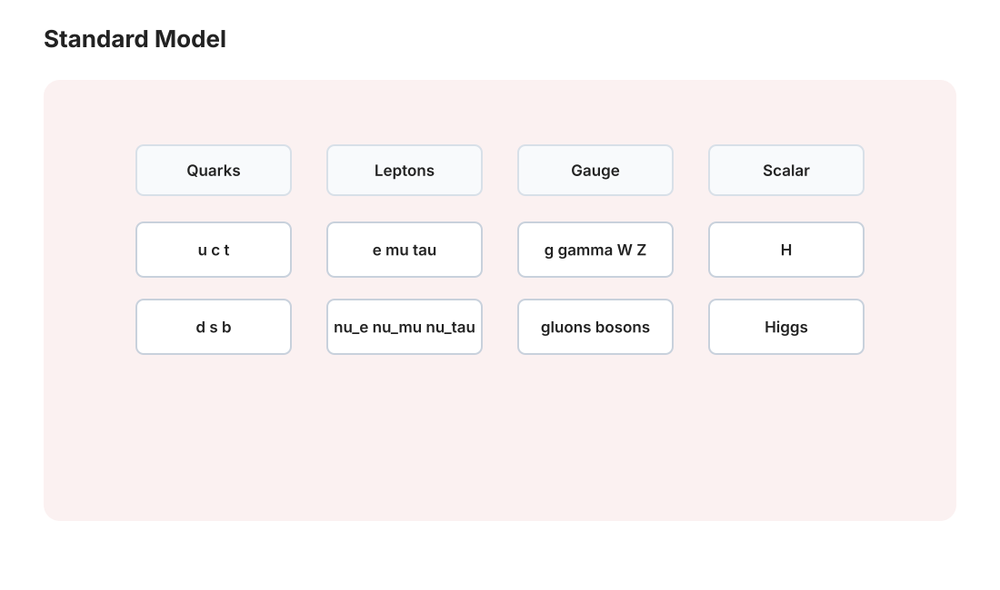

本页目录
粒子 I · 规范原理与标准模型粒子谱
对标：Halzen & Martin / Griffiths Elementary Particles ｜ 前置：qft-01/02、aqm-01（对称性）、抽代（群） 二十世纪物理的一条主线：相互作用的允许形式受到对称性深刻约束，但模型还需要额外的物理输入。本页先立起规范原理（局域描述的协变性 ⇒ 需要连接/规范场），再按 \(SU(3)\times SU(2)\times U(1)\) 盘点标准模型的粒子谱与三种相互作用的结构。
学习层：从“相位怎么比较”到 Wilson 回路
1. 先分清：global symmetry 与 gauge redundancy
把复场的相位写成“可转动的内部方向”很有用，但两个相近的说法不能混在一起。
全局内部对称性。 使用同一个常数 \(\alpha\)：\(\psi(x)\to e^{i\alpha}\psi(x)\)。若作用量在运动方程和边界条件下保持不变，Noether 定理给出
这里的 \(Q\) 是对应的 Noether 荷；它是场的内部对称性所产生的守恒量。它不同于“量子态矢量整体相位不改变射线”的另一种描述冗余。
局域规范冗余。 允许每个点独立选相位：\(\psi(x)\to e^{i\chi(x)}\psi(x)\)。在本页的格点模型里，\(\chi_i\) 改变的是同一个物理配置的描述，并不是制造了一个新的局域可观测自由度；真正能比较的量应当在局域变换下不变。
为什么要引入联络？因为不同点的 \(\psi_i\) 可以用不同的局部相位基底表示，直接的 \(\psi_i^*\psi_j\) 会多出 \(e^{-i\chi_i}e^{i\chi_j}\)，不能直接比较。链路变量
扮演“把 \(j\) 点的相位搬到 \(i\) 点再比较”的联络。我们全程采用同一套约定：
因此
都不变。前者是带联络的相邻点比较，后者是绕一圈的 holonomy（Wilson plaquette）；四个端点的相位在闭回路中逐项抵消，剩下的 \(\arg W\) 才是这个小方格能测到的通量信息。
2. 先做预测：哪一些量会跟着“换坐标”改变？
在下面的实验中选一个顶点，给它施加 \(\chi_i\)。预先判断：顶点 \(\psi_i\) 的箭头会转动；与它相连的有向边的 \(a_{ij}\) 会按 \(+\chi_i-\chi_j\) 改写；但 \(\arg W\) 与每个 \(\psi_i^*U_{ij}\psi_j\) 应保持不变。注意：这不是把场真的“推了一下”，而是检验规范冗余如何把局部记号重新分配。
3. 最小格点模型：一个 U(1) 方格
四个顶点带单位模的 \(\psi_i=e^{i\theta_i}\)。边 \(U_{ij}\) 的箭头按约定表示 \(j\to i\)，所以方格的闭合乘积正是 \(U_{12}U_{23}U_{34}U_{41}\)。角度都按模 \(2\pi\) 处理；单条边的 \(a_{ij}\) 依赖局部表示，但闭回路相位和带联络的双线性组合不依赖表示。
无 JavaScript 时的静态读法：局域变换为 \(\psi_i\to e^{i\chi_i}\psi_i\)、 \(U_{ij}\to e^{i\chi_i}U_{ij}e^{-i\chi_j}\)、 \(a_{ij}\to a_{ij}+\chi_i-\chi_j\)。例如只在顶点 2 施加 \(\chi_2=\pi/3\)，则 \(\theta_2\) 增加 \(\pi/3\)，\(a_{12}\) 减少 \(\pi/3\)，\(a_{23}\) 增加 \(\pi/3\)，其余边不变；\(W\) 的四项增量相加为 0，\(\psi_i^*U_{ij}\psi_j\) 的相位也逐项抵消。
| 预设 | \((a_{12},a_{23},a_{34},a_{41})\)（rad） | \(\arg W\)（模 \(2\pi\)） |
|---|---|---|
| 零通量 | \((0.80,-1.20,0.60,-0.20)\) | \(0\) |
| 非零通量 | \((0.70,-0.40,1.10,0.90)\) | \(2.30\) |
| 随机但固定 | \((-2.40,1.25,2.05,-0.55)\) | \(0.35\) |
按钮只做确定性的数值更新：图中的四个 \(\psi_i\) 箭头、四条 link angle、\(\arg W\)，以及四个 \(\psi_i^*U_{ij}\psi_j\) 的相位都会重画；“本次变化 \(|\Delta|\)”把施加前后的复数直接相减，数值应在舍入误差内为 0。重置回到零通量预设。
4. 回到连续理论：规范原理约束什么，又没有决定什么？
在同一符号约定下，一个最小的连续补偿方案可以写成
它说明局域协变性为什么需要 connection；但“需要 connection”不等于一条原则就选定了完整理论。规范原理本身不决定规范群是 \(U(1)\) 还是非阿贝尔群、不决定物质场取哪些表示/电荷、不决定耦合常数，也不决定所有动力学项、势能、真空和对称性破缺方式。这些是额外的模型输入、实验约束或一致性条件。局域规范冗余限制允许的写法，却不会把“全部结构”一键锁死。
同理，光子无质量不能简单归结为“局域相位自由”单独推出。在标准模型中，Higgs 机制破缺电弱群后仍未破缺的 \(U(1)_{em}\) 对应光子；这个未破缺规范结构保护通常微扰描述中的零质量，而 \(W/Z\) 的质量来自破缺后的实现。保留哪一个未破缺子群是模型的整体结构，不是局域化一个相位的自动结论。
5. 误区与迁移
- 非阿贝尔场强中的 \([A_\mu,A_\nu]\) 产生规范玻色子的自作用，这是渐近自由的关键来源之一；但 \(\beta\) 函数的符号还取决于费米子、标量等物质内容。对 \(\beta(g)=-b_0g^3/(16\pi^2)+\cdots\)，规范场的正贡献必须压过物质场的屏蔽贡献，才有 \(b_0>0\)。QCD 的实际内容满足这一条件，不应把“有自作用”说成任意非阿贝尔理论都必然渐近自由。
- “弱力只搭左手”是简写而非完整表述：带电流 \(W^\pm\) 只耦合左手费米子（等价地，右手反费米子）；中性流 \(Z\) 对带电费米子的左、右手分量都可有耦合。三代复制的是 gauge quantum numbers，不是只差质量；夸克的 CKM、轻子的 PMNS 等混合矩阵也是谱的一部分。
- color 是 \(SU(3)_c\) 的规范荷，不是普通的严格全局守恒可观测量。物理态受 Gauss 约束并在 QCD 中表现为色单态/禁闭；反应判定应检查规范表示能否组成 singlet，而不是把 color 当成和电荷一样的全局标签。
- 在最小、无中微子质量的重整化标准模型里，重子数 \(B\) 与总轻子数 \(L\) 是经典/微扰层面的偶然对称；电弱异常在非微扰的 instanton/sphaleron 过程中破坏 \(B+L\) 而保留 \(B-L\)。中微子振荡已经证明中微子有质量和混合，现实理论需加入质量来源（或有效高维算符），因此不能把各轻子味道说成无条件精确守恒；总 \(L\) 是否保留还取决于质量机制（Dirac 质量可保留它，Majorana 质量则可破坏它）。
迁移题：把方格换成一条链，验证开路径的 \(\psi_i^*U_{ij}\psi_j\) 需要两端场一起变换；再把链闭合，说明为什么 \(W\) 的相位可以在不选规范的情况下代表通量。最后回答：若把 \(U_{ij}\) 删除，哪个相位比较步骤首先失去局部规范协变性？

1. 规范原理：对称性生成相互作用
逻辑链【推导级】：自由 Dirac 场的 \(\mathcal L\) 在全局相位变换 \(\psi \to e^{i\alpha}\psi\) 下不变（Noether ⇒ 电流与电荷，qft-01）。升级要求：\(\alpha \to \alpha(x)\)（局域——各处独立选相位）——\(\partial_\mu\psi\) 不再按同样方式变换；在保持场内容和最小局域耦合的假设下，一个补偿方案是引入联络 \(A_\mu\)、换协变导数
——这给出 QED 中的最小耦合顶点 \(-ie\bar\psi\gamma^\mu\psi A_\mu\)，并强制许多项必须以规范协变方式出现；但规范原理并不单独选定规范群、物质表示、耦合常数或全部动力学。光子在标准模型中保持无质量，是未破缺 \(U(1)_{em}\) 与整个电弱破缺结构的结果，不是“局域相位”一条要求把所有性质锁死。\(\blacksquare\)
非阿贝尔推广（Yang–Mills）：对称群换成非交换的 \(SU(N)\)（抽代线的群论上岗）：规范场自带指标、场强多出自作用项 \([A_\mu, A_\nu]\)——规范玻色子彼此相互作用。这个自作用是渐近自由的关键来源之一，但 \(\beta\) 的最终符号还要看物质场的屏蔽贡献；QCD 的实际物质内容使 \(\beta(g)<0\)（qft-03），不能把结论推广成“任意非阿贝尔理论都必然渐近自由”。
2. 标准模型点名册
规范群 \(SU(3)_c \times SU(2)_L \times U(1)_Y\)——三因子是统一描述的起点；电弱混合和 Higgs 破缺后才得到熟悉的 \(W/Z\) 与光子：
| 力 | 群 | 规范玻色子 | 特征 |
|---|---|---|---|
| 强 | \(SU(3)_c\)（色） | 8 胶子 | 自作用与实际物质内容共同给出渐近自由；低能表现为禁闭（qft-03） |
| 弱（电弱破缺后） | \(SU(2)_L\times U(1)_Y\) | \(W^\pm, Z\) | 带电流 \(W\) 只耦合左手费米子/右手反费米子；\(Z\) 的中性流可同时耦合左、右手分量；质量来自 Higgs 机制（→ pp-02） |
| 电磁 | 未破缺的 \(U(1)_{em}\) | 光子 | 在标准模型的通常微扰描述中无质量、长程；不是局域相位单独决定 |
物质场（费米子，三代复印件）：每代 = 两夸克（上型 + 下型，各三色）+ 带电轻子 + 中微子；三代复制的是相同的 gauge quantum numbers，而质量矩阵对角化后还留下夸克 CKM、轻子 PMNS 等混合，不能简化成“只差质量”。夸克禁闭与强子：可观测强子是色单态——介子（\(q\bar q\)）、重子（\(qqq\)）。质子质量主要来自 QCD 的非微扰动力学、夸克/胶子动能与场能；当前夸克质量是重要但较小的显式贡献，不给出脱离重整化方案和尺度的可疑精确百分比。
中微子一嘴：振荡实验（诺奖 2015）⇒ 有质量且发生混合 ⇒ 最小、无质量中微子的标准模型需要加入质量来源（或有效高维算符）。这也是粒子物理现存最便宜的“新物理”窗口【引用】。
3. 守恒律与费曼图速判（工作技能）
守恒与约束要分层看：电荷、能动量和角动量分别受未破缺规范结构、时空平移/旋转对称控制；色是局域规范荷，不是普通严格全局守恒可观测量，物理反应要检查规范表示与 singlet 结构。重子数 \(B\) 与总轻子数 \(L\) 在最小标准模型中是经典/微扰层面的偶然对称，而非无条件精确定律：电弱异常的非微扰过程破坏 \(B+L\)、保留 \(B-L\)；现实的中微子质量/混合也使轻子味道不能当作普遍精确守恒量，总 \(L\) 是否保留则取决于质量机制（Dirac 可保留，Majorana 可破坏）。弱作用中可破坏宇称 P，CP 也有小但关键的破坏（宇宙正反物质不对称的必要条件之一：Sakharov 条件【引用】——粒子物理与宇宙学（cosmo 线）的深接口）；夸克味通过 CKM 混合改变——\(s \to u\) 衰变因此有许可证。
判衰变/反应三步：① 守恒量核对（电荷/重子/轻子数）；② 能量学（\(\Delta m > 0\)？——sr-01 四动量）；③ 走哪种力（有中微子/变味 = 弱、有光子 = 电磁、其余强）——寿命量级随之而定（强 \(10^{-23}\) s、电磁 \(10^{-16}\)、弱 \(10^{-10}\) 以上——寿命是相互作用强度的秒表）。
4. 练习与要点
例 1（规范原理练手） 对复标量场执行 §1 的升级流程：在选定 \(U(1)\) 电荷与最小耦合后得标量 QED（协变导数 + \(|D\phi|^2\) 展开出三点/四点顶点）——“局域化一个对称、得到一组被允许的相互作用”是完整仪式，但不是从规范原理单独推出唯一模型（pp-02 Higgs 场用的正是这类结构）。
例 2（判衰变） 在忽略中微子质量与非微扰效应的通常微扰近似下，\(n \to p + e^- + \bar\nu_e\)：电荷 ✓ 重子数 ✓ 轻子数 ✓、\(Q=m_n-m_p-m_e\approx0.782\) MeV \(>0\) ✓、有中微子 ⇒ 弱作用——寿命 ~15 min（弱 + 相空间小的双重压制）✓；对照 \(\Delta^{++} \to p\pi^+\)（强，\(10^{-23}\) s）：三步法的两端样本。
例 3（色代数最小题） 为什么没有色非单态的孤立 \(qq\) 强子：\(3\otimes3 = 6\oplus\bar3\) 无单态；\(q\bar q\)：\(3\otimes\bar3 = 8\oplus\mathbf 1\) ✓、\(qqq\)：\(3^{\otimes3} \ni \mathbf 1\) ✓——“哪些组合能成为可观测强子”受群表示与禁闭动力学共同约束，不是把 color 当作普通全局守恒数（抽代线的张量积在自然界的直接执法）。\(\blacksquare\)
下一页：最后一块拼图——电弱统一与 Higgs 机制【骨架】：质量从哪来、2012 年找到的那个粒子到底是什么。